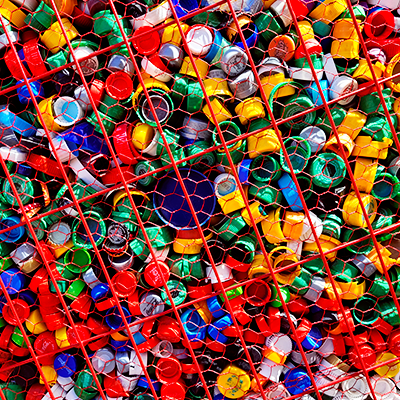

La contaminación
La contaminación generada por residuos se refiere a los efectos negativos que se producen cuando los desechos generados por las actividades humanas no se gestionan adecuadamente. Aquí te explico algunos aspectos clave sobre este tipo de contaminación:
Residuos sólidos
Las ciudades generan grandes cantidades de residuos sólidos, como plásticos, papel, vidrio, metales y materia orgánica. Si estos residuos no se manejan adecuadamente, pueden acumularse en vertederos o incluso terminar en ríos, lagos y océanos, causando daños al medio ambiente y a la vida silvestre.
Vertederos no controlados
Muchas veces, los residuos se disponen en vertederos sin una adecuada planificación o control. Esto puede generar la filtración de lixiviados, que son líquidos contaminantes que se generan al descomponerse los residuos, y contaminar el suelo y las fuentes de agua subterránea.

Contaminación marina
La basura que se desecha incorrectamente puede llegar a los océanos a través de los sistemas de drenaje pluvial y los ríos. Esto causa la contaminación de los ecosistemas marinos y puede tener efectos devastadores en la vida marina, como la ingestión de plásticos por parte de los animales o el enredo de especies en desechos.
Vertederos no controlados
Muchas veces, los residuos se disponen en vertederos sin una adecuada planificación o control. Esto puede generar la filtración de lixiviados, que son líquidos contaminantes que se generan al descomponerse los residuos, y contaminar el suelo y las fuentes de agua subterránea.

Es fundamental promover una gestión adecuada de los residuos, implementar políticas de reducción y reciclaje, fomentar la educación ambiental y la responsabilidad individual. Al tomar medidas para reducir, reciclar y reutilizar nuestros residuos, podemos contribuir a la protección del medio ambiente y a la preservación de nuestros recursos naturales.